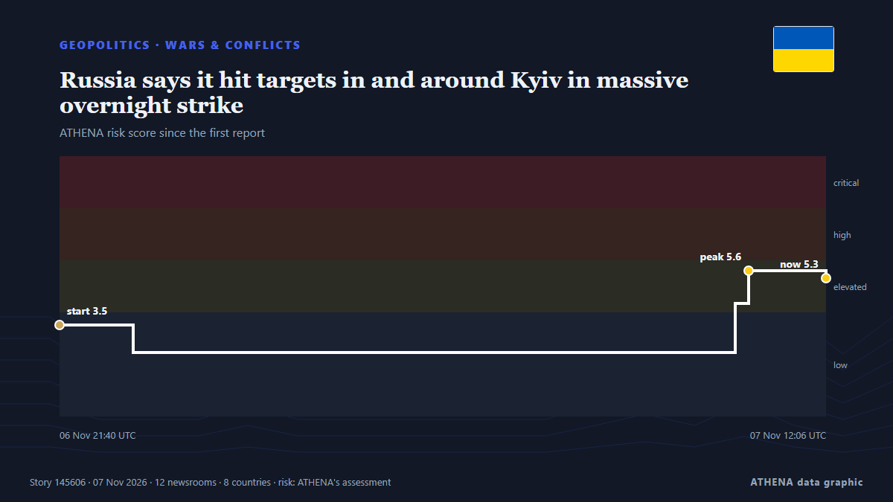

Πόλεμοι & συγκρούσεις
ΧορηγούμενοΠαρουσιάζεται από  Cybernetics and Artificial Intelligence Lab Welcome to the Cybernetics and Artificial Intelligence Laboratory, established at the Department of Business Administration of the National and Kapodistrian University of Athens. The lab is headed by Professor Dimitrios Thomakos. The lab aims to do research that can be published in top venues. Our research uses tools and methods of Artificial Intelligence, and lies in the following areas: - Forecasting - Decision making - Cyber security - Finance We are always looking forward to collaborating with exceptional students!
Cybernetics and Artificial Intelligence Lab Welcome to the Cybernetics and Artificial Intelligence Laboratory, established at the Department of Business Administration of the National and Kapodistrian University of Athens. The lab is headed by Professor Dimitrios Thomakos. The lab aims to do research that can be published in top venues. Our research uses tools and methods of Artificial Intelligence, and lies in the following areas: - Forecasting - Decision making - Cyber security - Finance We are always looking forward to collaborating with exceptional students!
| 25 Οκτ | 0 |
|---|---|
| 26 Οκτ | 0 |
| 27 Οκτ | 0 |
| 28 Οκτ | 0 |
| 29 Οκτ | 0 |
| 30 Οκτ | 0 |
| 31 Οκτ | 1 |
| 1 Νοε | 0 |
| 2 Νοε | 1 |
| 3 Νοε | 7 |
| 4 Νοε | 5 |
| 5 Νοε | 4 |
| 6 Νοε | 6 |
| 7 Νοε | 0 |
Οι τίτλοι των ειδήσεων παρουσιάζονται στα αγγλικά, όπως δημοσιεύτηκαν.

Russia says it hit targets in and around Kyiv in massive overnight strike
Nov 7 - Russia said its forces carried out a massive overnight strike on what it described as targets in Ukraine's military-industrial sector and energy and transport infrastructure in Kyiv and the… από The Straits Times
Death toll from Russian attack on Komyshuvakha rises to 55
Rescue workers have recovered the remains of nine more victims from under the rubble as search operations continue amid the threat of further Russian strikes. από Ukrainska Pravda (English)
US strikes Iran’s Qeshm island – Report
The US has not publicly announced the attacks, so as not to signal any intention of resuming major combat operations, the Wall Street Journal reported. από CNA (Channel NewsAsia)
Israeli strikes in Gaza kill 8, including a child
Five people were killed in Khan Yunis and three in Gaza City, according to Gaza's civil defence service. από Free Malaysia Today
Zelensky warns of new Russian strikes on Ukraine energy sector
KYIV: Ukrainian President Volodymyr Zelensky on Friday warned that Russian planned a fresh strike against Ukraine’s energy sector and renewed his call for Patriot anti-missile systems. από Arab News
Syria aids Saudi Arabia with military advice and training amid Houthi attacks, sources say
Joint training exercises were under way and more were planned in both security and defence. από The Straits Times
French judges probe war crimes complaint against Israeli army in Lebanon
France has opened a judicial investigation into a war crimes complaint over an Israeli strike on a residential building in Lebanon in 2024, lawyer Clemence Bectarte told AFP on Tuesday. από Naharnet
Death toll from Russian strike on Ukrainian aid centre reaches 42
Up to 33 people remained buried under rubble in the village of Komyshuvakha as rescue and recovery efforts continued. από Free Malaysia Today
Spain provides Ukraine with new $489M military aid package: Zelenskyy
Ukrainian president discusses Kyiv's 'most pressing defense needs' with Spanish premier in Madrid, highlighting Russian strikes on energy and transport infrastructure. από Anadolu Agency (English)
Stranded cruise ship Odyssey leaves Cambodia with no passengers
A U.S. cruise ship that suspended its operations in Cambodia has left with only crew aboard, according to Cambodian officials. από ABC News (International)
Oil falls for a fourth day on expectations for lower risk of Iran war escalation
Both oil benchmarks closed at their lowest since Aug 31. από The Business Times
Indonesia deploys over 20,000 troops to Jakarta amid wiretapping probe
Authorities have not confirmed that the military deployment in Jakarta is connected to the arrests of two senior police officers and former national police chief Listyo Sigit Prabowo. από CNA (Channel NewsAsia)
Ukrainian drones strike Russia’s Ryazan region, with fires reported at oil refinery and Wildberries warehouse
Ukrainian drones attacked Russia’s Ryazan region overnight on November 5, Ryazan Governor Pavel Malkov said. από Meduza (English)
Asia hopes Democrats can provide relief from Trump's Iran war, tariffs
ASIAN nations that have borne the brunt of the US-Israeli war on Iran and US President Donald Trump’s trade tariffs are hopeful that Democrats will be able to temper his most harmful policies. από New Straits Times
Dozens dead and missing after Russian strike on Ukrainian aid centre, officials say
Nov 4 - The death toll from a Russian bombing of an aid distribution point in Ukraine's southeastern Zaporizhzhia region on Monday has risen to 37, with dozens missing, officials said, in one of the… από The Straits Times
Drone attack sparks fire at Ozon logistics centre in Russia’s Adygea
A fire broke out at an Ozon logistics centre in the city of Adygeysk, in Russia’s Republic of Adygea, following a drone attack. από AzerNews
Hezbollah denies sending military experts to Yemen
Hezbollah denied Wednesday allegations by Yemen’s Southern Transitional Council regarding the presence of Hezbollah experts in the country. από Naharnet
Washington strikes Iranian targets in the Strait of Hormuz: US official
The United States launched strikes on Iranian targets, a U.S. official said, in what appeared to be a limited operation on the eve of Tuesday’s crucial midterm elections. από The National Herald
Russia hits power stations in Ukraine’s regions of Kyiv
Russia has hit two power stations in Ukraine’s regions of Kyiv and Zhytomyr, the Russian defence ministry said on Telegram on Wednesday, keeping up nearly daily strikes on its neighbour’s energy… από Cyprus Mail